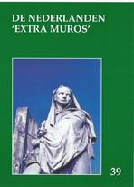

> publicaties >
jaarboek 39 (2017)

Ook dit 39e Jaarboek De Nederlanden ‘extra
muros’ brengt weer een rijk palet aan bijdragen over
de randgebieden van onze Lage Landen die deel uitmaken van
ons geschiedkundig erfgoed. En als steeds openen we met de
korte bijdrage die zowat in een notendop het “programma” van
Zannekin
verwoordt.
Van dezelfde auteur stamt
ook de kortere bijdrage Meer Standaardtaal in
het Frans-Vlaams dan in het West-Vlaams,
dat in zeker opzicht een toelichting vormt op zijn beide
publicaties Nieuw Oud
Vlaams, die op hun beurt een aanvulling vormden op zijn
succesvolle Woordenboek
van het Frans-Vlaams (2005).
In de beide daaropvolgende
bijdragen wordt aandacht besteed aan het thema dat centraal
stond op onze Ontmoetingsdag van 2016 te Belle: de Beeldenstorm.
Vooreerst komt de lezing van Marten Heida aan bod over De
Beeldenstorm: een gereformeerde invalshoek,
waarna de inbreng van Guido Vandermarliere over de Geuzenliederen
voorgesteld wordt. De lezing van Wido Bourel te Belle zal
opgenomen worden in het jaarboek 2018.
Met In
het randgebied van de Nederlanden. Een
reportage in de Romaanse gouwen brengt Maurits Cailliau
een merkwaardig documentair verslag uit 1944 boven water, waarin
toen vanuit Vlaams-nationalistische hoek met een voor dat
tijdsgewricht opzienbarend verfrissende blik gekeken werd naar
het Nederlandse verleden van onze territoria beneden de
Belgische taalgrens. De toonzetting is van de auteur, de
aangehaalde gegevens stammen van de toenmalige verslaggever
Albert Derbecourt.
Al evenveel, zo niet nog
meer, documentaire waarde bevat het onderzoek van Ruud Bruijns
naar Het bewustzijn van de
Nederlanden en de verloren gebieden in de 18e eeuw.
Surfend doorheen gedigitaliseerde krantenbestanden uit die tijd
kwamen hem tal van onvermoede Heel-Nederlandse getuigenissen
onder ogen, waarbij pertinente aandacht voor de aan Frankrijk
verloren gegane Zuidelijkste Nederlandse gebieden toen nog als
vanzelfsprekend ervaren werd.
Als scharnier tussen de
Zuidelijke en de Oostelijke Nederlanden fungeert de bijdrage van
Herman Vandormael over “Het wonder van
Edingen” – de taalgrens van 1962. Daarin
doet hij verslag over de taal-grensperikelen en –vervalsingen op
de grens tussen Henegouwen en Brabant.
Emile Smit biedt ons met De
Kleefse enclaves in Gelderland
inzicht op de totstandkoming van de Duits Nederlandse grens in
deze contreien. Tot de herziene grensafbakeningen kwam het in
1816-1817 als uitloper van wat op het Congres van Wenen
bedisseld werd.
Het
Graafschap Lingen: een tijdelijk stukje Nederland in
Duitsland is het thema dat Zeno Kolks ons dit keer aanreikt. We
vernemen meer over zowel de geschiedenis als de
kunstgeschiedenis van dit gebied en zijn dwarsverbanden met de
Nederlanden.
Leo Camerlynck brengt ons
nog een stuk verder oostwaarts met zijn
Tijdingen uit
Oostland. Achtereenvolgens komen daarin aan
bod: Wilamowice, een Vlaams dorp in Zuid-Polen, Michael Albert
en de Flandrer in Transsylvanië en de Casselnaar Nicasius
Elleboudt, een Vlaamse kerkleider in Hongarije. Een merkwaardig
te noemen drieluik.
Vorig jaar startte Marten
Heida met zijn Oostrand-sprokkels,
zijnde een actualiteitskroniek over wat reilt en zeilt binnen de
Duitse Nederlanden, die in dit jaarboek een logisch vervolg
vindt.
Met de
Kroniek en boekbesprekingen sluiten we
traditioneel ons jaarboek af. In dit jaarboek zal men op pagina
2 tevergeefs zoeken naar het de Zannekin-werking
ondersteunende logo van de Provincie West-Vlaanderen (voorheen
de Vlaamse Overheid). Vanaf 2016 dienen we het immers zonder die
al bij al bescheiden subsidie zien te rooien. Gewraakt werd
daarbij de “bijdragen met een sterk gekleurd taalgebruik” die de
beoordelingscommissie “niet stroken vindt met een
kwaliteitsvolle erfgoedwerking”. We kunnen ons niet ontdoen van
het aanvoelen dat hoe meer “Vlaanderen” zich eigen staatsallures
aanmeet, hoe verder het de Heel-Nederlandse gezichtseinder
afstoot. Een betreurenswaardige evolutie, voorwaar!
|
omvang
|
318 paginas |
|
ISBN
|
90-71326-19-5 |
|
prijs leden (inclusief verzendingskosten)
|
€ 26,00 |
|
prijs niet-leden (exclusief verzendingskosten)
|
€ 29,00 |